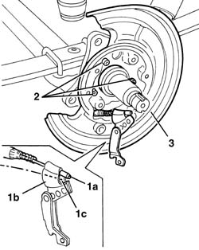

3380C41 REAR WHEEL BRAKE BACK PLATE - R.R.
- Path
- Procedures > 33 BRAKING SYSTEM > 3380 HANDBRAKE > 3380C HANDBRAKE DEVICE FOR REAR DISC BRAKES > 3380C41 REAR WHEEL BRAKE BACK PLATE - R.R.
- Kind
- repair procedure (removal / refitting; the operation number is the code)
- Applies to
- all engines; all production periods
- Interactive page
- https://sloeber94.github.io/elrnDB-fDct/en/#/244001155
Applies to: all engines; all production periods
 Removing
Removing
 Refitting
RefittingOp. 3310B30 REAR BRAKE DISCS R R
Op. 3310B50 REAR BRAKE DISCS R R
Op. 3380C10 HANDBRAKE SHOES - R.R.
Op. 4450D10 HUB OF ONE REAR WHEEL, L/H OR R/H - R+R WITH WHEEL REMOVED
1. Release the handbrake cable terminal retainer (1a) from the linkage (1b) passing it through area (1c).
2. Undo the bolts fixing the brake back plate.
3. Remove the brake back plate.

Applies to: all engines; all production periods
Refitting
Removing- Place the brake back plate in position.
- Tighten the plate fixing bolts.
- Attach the handbrake cable terminal retainer to the linkage.
Op. 4450D10 HUB OF ONE REAR WHEEL, L/H OR R/H - R+R WITH WHEEL REMOVED
Op. 3380C10 HANDBRAKE SHOES - R.R.
Op. 3310B50 REAR BRAKE DISCS R R
Topics linked from this page (5)
- 3310B30 REAR BRAKE DISCS R R
- 3310B50 REAR BRAKE DISCS R R
- 3380A04 HANDBRAKE - CHECK TRAVEL
- 3380C10 HANDBRAKE SHOES - R.R.
- 4450D10 HUB OF ONE REAR WHEEL, L/H OR R/H - R+R WITH WHEEL REMOVED